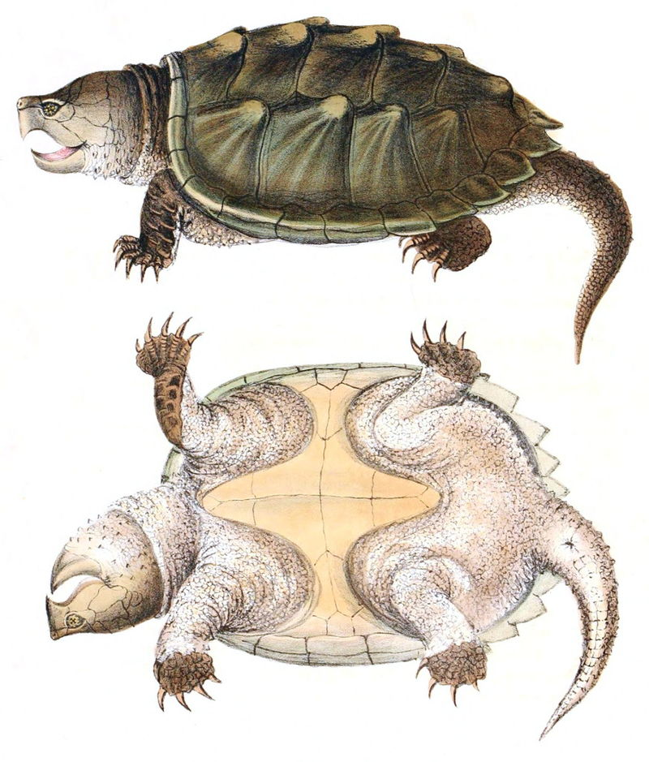
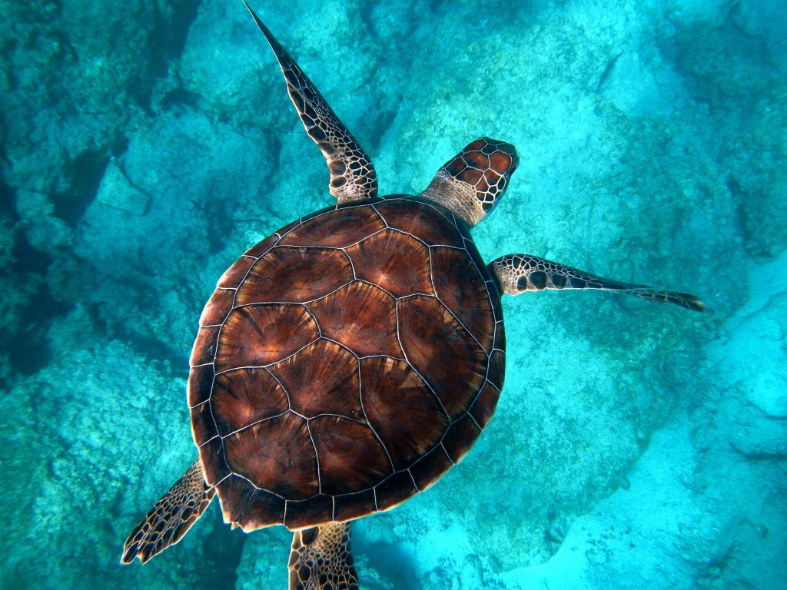

Le site Internet de tortues de Ismaël
Je t'aime site internet de tortues.
Le site sert à savoir comment les tortues vivent, j'ai choisi un site internet de tortues parce que j'aime bien les tortues
Tortue Hermann

J'aime cette image parce que cette tortue est mignonne.
Estudo hermanni, la Tortue d'Hermann, est une espèce de tortues de la famille des Testudinidae1.
En France, elle est également appelée Tortue des Maures.
Cette espèce est dédiée en l'honneur du botaniste et médecin Jean Hermann (1738-1800).
Tortue galapagos

J'aime cette tortue parce que elle est grosse.
Les tortues géantes des Galápagos sont un complexe de dix espèces1, si proches que certains les
considèrent comme des sous-espèces d'une espèce unique Chelonoidis nigra au sens large.
Elles
constituent l'un des animaux les plus emblématiques de la faune des îles Galápagos : elles sont
endémiques dans les neuf îles de l'archipel.
Tortue Alligator

J'aime bien cette tortue, mais je ne sais pas pourquoi.
Cette espèce est endémique des États-Unis. Elle se rencontre au Kansas, en Iowa, en Indiana, en
Illinois, au Tennessee, au Kentucky, au Missouri, en Oklahoma, au Texas, en Arkansas, en Louisiane,
au Mississippi, en Alabama, en Géorgie et en Floride.
Cette espèce est caractérisée par une tête large et lourde, et une épaisse carapace aux larges
écailles en pointe, lui donnant cette apparence primitive d'une autre ère.

Tortue de Mer
J'aime cette tortue parce que elle est dans l'eau.
Les tortues marines sont les tortues de la super-famille des Chelonioidea1. Elles sont présentes
dans tous les océans du monde à l'exception de l'océan Arctique.
La tortue luth est la plus grande, mesurant 2 m de long, de 1 m à 1,5 m de large et pesant 600 kg.